Code
library(tidyverse)
library(GGally)
library(janitor)
library(statebins)
library(ggplot2)
df <- read_csv("Airline_Delay_Cause.csv")library(tidyverse)
library(GGally)
library(janitor)
library(statebins)
library(ggplot2)
df <- read_csv("Airline_Delay_Cause.csv")delay_airport <- df |>
group_by(airport, airport_name) |>
summarise(
total_flights = sum(arr_flights, na.rm = TRUE),
carrier_delay = sum(carrier_delay, na.rm = TRUE),
weather_delay = sum(weather_delay, na.rm = TRUE),
nas_delay = sum(nas_delay, na.rm = TRUE),
security_delay = sum(security_delay, na.rm = TRUE),
late_aircraft_delay = sum(late_aircraft_delay, na.rm = TRUE),
.groups = "drop"
) |>
mutate(
carrier_rate = carrier_delay / total_flights,
weather_rate = weather_delay / total_flights,
nas_rate = nas_delay / total_flights,
security_rate = security_delay / total_flights,
late_aircraft_rate = late_aircraft_delay / total_flights
)
delay_cols <- c("carrier_rate", "weather_rate", "nas_rate",
"security_rate", "late_aircraft_rate")
delay_norm <- delay_airport |>
mutate(across(all_of(delay_cols), scale))
library(viridis)
delay_cols <- c(
"carrier_rate",
"weather_rate",
"nas_rate",
"security_rate",
"late_aircraft_rate"
)library(tidyverse)
library(GGally)
state_delay <- delay_airport |>
mutate(
state = sub(".*, ([A-Z]{2}):.*", "\\1", airport_name),
region = state.region[match(state, state.abb)]
) |>
drop_na(region) |> # ← REMOVE NA regions
group_by(state, region) |>
summarise(
carrier_rate = mean(carrier_rate, na.rm = TRUE),
weather_rate = mean(weather_rate, na.rm = TRUE),
nas_rate = mean(nas_rate, na.rm = TRUE),
security_rate = mean(security_rate, na.rm = TRUE),
late_rate = mean(late_aircraft_rate, na.rm = TRUE),
.groups = "drop"
)
GGally::ggparcoord(
data = state_delay,
columns = 3:7,
groupColumn = "region",
scale = "std",
alphaLines = 0.6
) +
scale_color_brewer(palette = "Set1") +
theme_minimal(base_size = 13) +
labs(
title = "Parallel Coordinate Plot of State Delay Profiles",
subtitle = "Lines represent states; Colors represent Census regions",
x = "Delay Type",
y = "Standardized Delay Rate",
color = "Region"
) +
theme(
legend.position = "right",
axis.text.x = element_text(angle = 45, hjust = 1)
)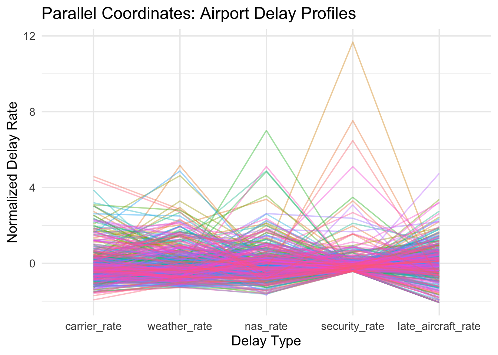
library(tidyverse)
library(reshape2)
library(viridis)
library(ggplot2)
delay_cols <- c(
"carrier_rate",
"weather_rate",
"nas_rate",
"security_rate",
"late_aircraft_rate"
)
corr_mat <- delay_airport |>
select(all_of(delay_cols)) |>
cor(use = "pairwise.complete.obs")
corr_df <- melt(corr_mat)
names(corr_df) <- c("DelayType1", "DelayType2", "Correlation")
ggplot(corr_df, aes(x = DelayType1, y = DelayType2, fill = Correlation)) +
geom_tile(color = "white") +
scale_fill_distiller(
palette = "Blues", direction=1) +
theme_minimal(base_size = 14) +
labs(
title = "Correlation Heatmap of Airport Delay Types",
x = "Delay Type",
y = "Delay Type",
fill = "Correlation"
) +
theme(axis.text.x = element_text(angle = 45, hjust = 1))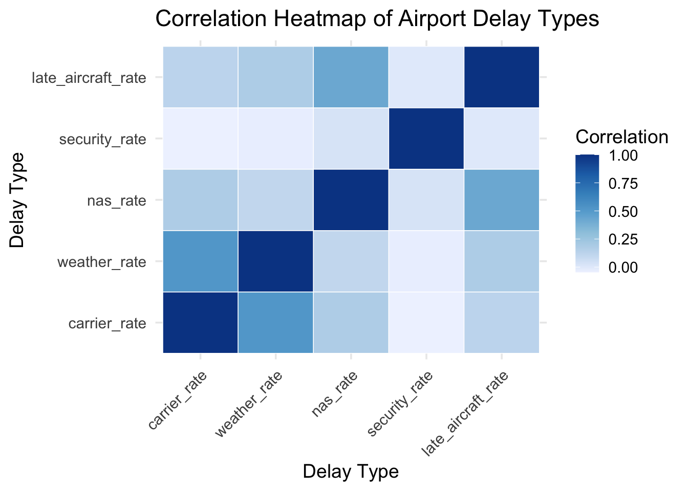
library(dplyr)
library(tidyr)
library(ggplot2)
delay_scatter_long <- delay_airport |>
select(
airport, total_flights,
carrier_rate, weather_rate, nas_rate,
security_rate, late_aircraft_rate
) |>
pivot_longer(
cols = ends_with("_rate"),
names_to = "delay_type",
values_to = "delay_rate"
)
ggplot(delay_scatter_long,
aes(x = total_flights, y = delay_rate)) +
geom_point(alpha = 0.5, size = 1.5, color = "blue") +
scale_x_log10(
breaks = c(100, 1000, 10000, 100000),
labels = c("100", "1K", "10K", "100K")
) +
facet_wrap(~ delay_type, scales = "free_y") +
theme_minimal(base_size = 15) +
labs(
title = "Airport Size vs Delay Rate by Delay Type",
x = "Total Flights (Log Scale)",
y = "Delay Rate (%)"
)
library(ggalluvial)
state_flow <- delay_airport |>
mutate(
state = sub(".*, ([A-Z]{2}):.*", "\\1", airport_name),
region = state.region[match(state, state.abb)]
) |>
rowwise() |>
mutate(
dominant = delay_cols[
which.max(c_across(all_of(delay_cols)))
]
) |>
ungroup() |>
tidyr::drop_na(region) |>
group_by(region, dominant) |>
summarise(count = n(), .groups = "drop")
ggplot(state_flow,
aes(axis1 = region, axis2 = dominant, y = count)) +
geom_alluvium(aes(fill = dominant)) +
geom_stratum() +
geom_label(aes(label = after_stat(stratum)), stat = "stratum") +
theme_minimal() +
labs(
title = "Region-to-Dominant Delay Type Flow",
y = "Number of Airports"
)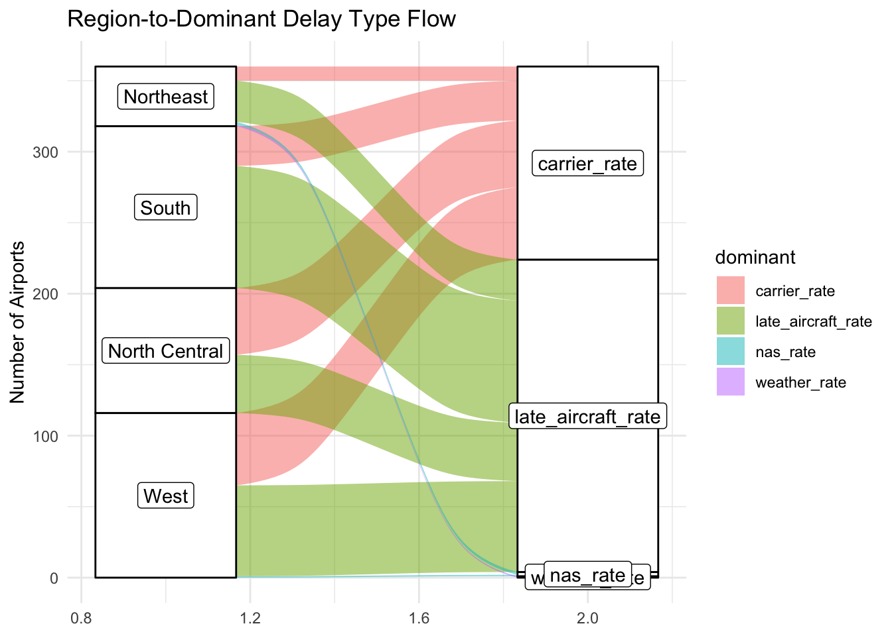
library(sf)
library(tidyverse)
delay_by_state_type <- delay_airport |>
mutate(state = sub(".*, ([A-Z]{2}):.*", "\\1", airport_name)) |>
group_by(state) |>
summarise(
carrier_delay = sum(carrier_delay, na.rm = TRUE),
weather_delay = sum(weather_delay, na.rm = TRUE),
nas_delay = sum(nas_delay, na.rm = TRUE),
security_delay = sum(security_delay, na.rm = TRUE),
late_aircraft_delay = sum(late_aircraft_delay, na.rm = TRUE),
total_flights = sum(total_flights, na.rm = TRUE)
) |>
mutate(
state_full = tolower(state.name[match(state, state.abb)]),
carrier_rate = carrier_delay / total_flights,
weather_rate = weather_delay / total_flights,
nas_rate = nas_delay / total_flights,
security_rate = security_delay / total_flights,
late_rate = late_aircraft_delay / total_flights
)library(ggplot2)
library(viridis)
delay_long <- delay_by_state_type |>
pivot_longer(
cols = ends_with("_rate"),
names_to = "delay_type",
values_to = "delay_value"
) |>
mutate(
delay_type = recode(delay_type,
carrier_rate = "Carrier",
weather_rate = "Weather",
nas_rate = "NAS",
security_rate = "Security",
late_rate = "Late Aircraft")
)
states_sf <- st_as_sf(maps::map("state", plot = FALSE, fill = TRUE))
plot_data <- left_join(
states_sf,
delay_long,
by = c("ID" = "state_full")
) |>
mutate(
state_abb = toupper(state.abb[match(ID, tolower(state.name))]),
region = state.region[match(state_abb, state.abb)]
) |>
filter(!is.na(region))
delay_types <- plot_data |>
dplyr::filter(!is.na(delay_type)) |>
dplyr::pull(delay_type) |>
unique()
plot_list <- list()
for (dt in delay_types) {
p <- ggplot(filter(plot_data, delay_type == dt)) +
geom_sf(aes(fill = delay_value), color = "white", linewidth = 0.2) +
geom_sf_text(aes(label = state_abb), size = 3, color = "black") +
scale_fill_viridis_c(direction = -1) +
theme_void() +
labs(
title = paste(dt, "Delay Rate per Flight by State"),
fill = "Delay per Flight"
)
plot_list[[dt]] <- p
}
plot_list$Carrier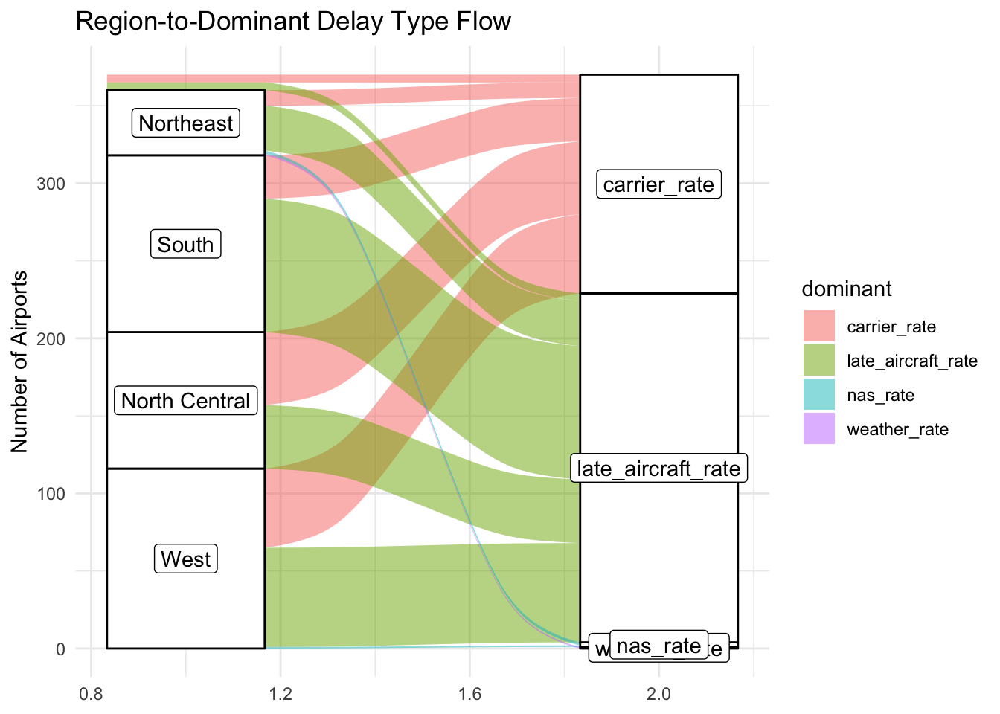
$Weather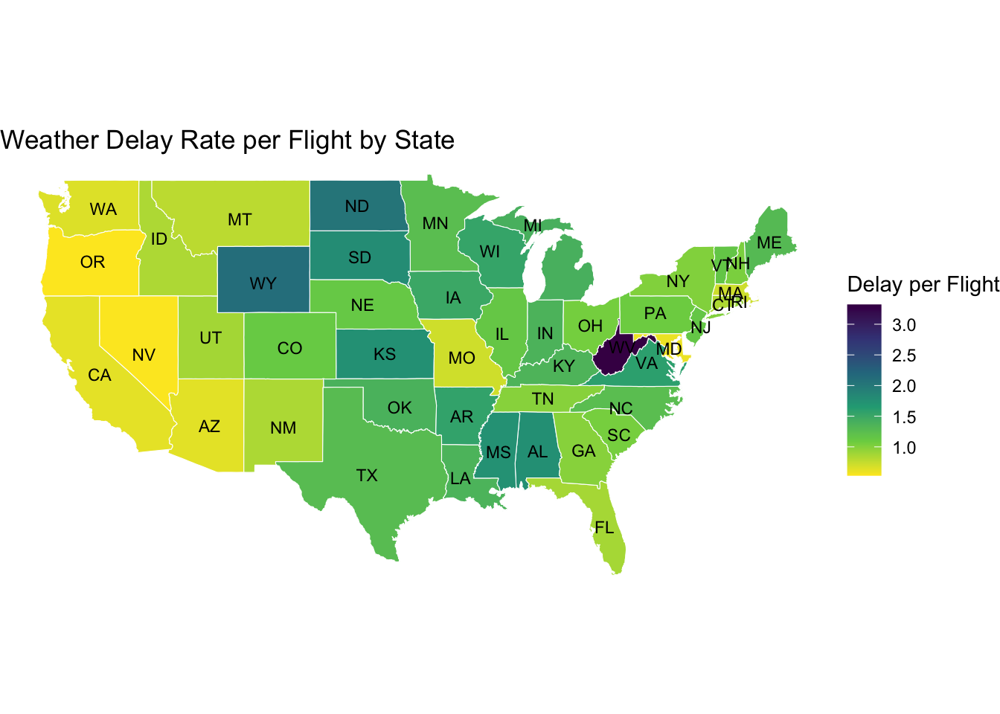
$NAS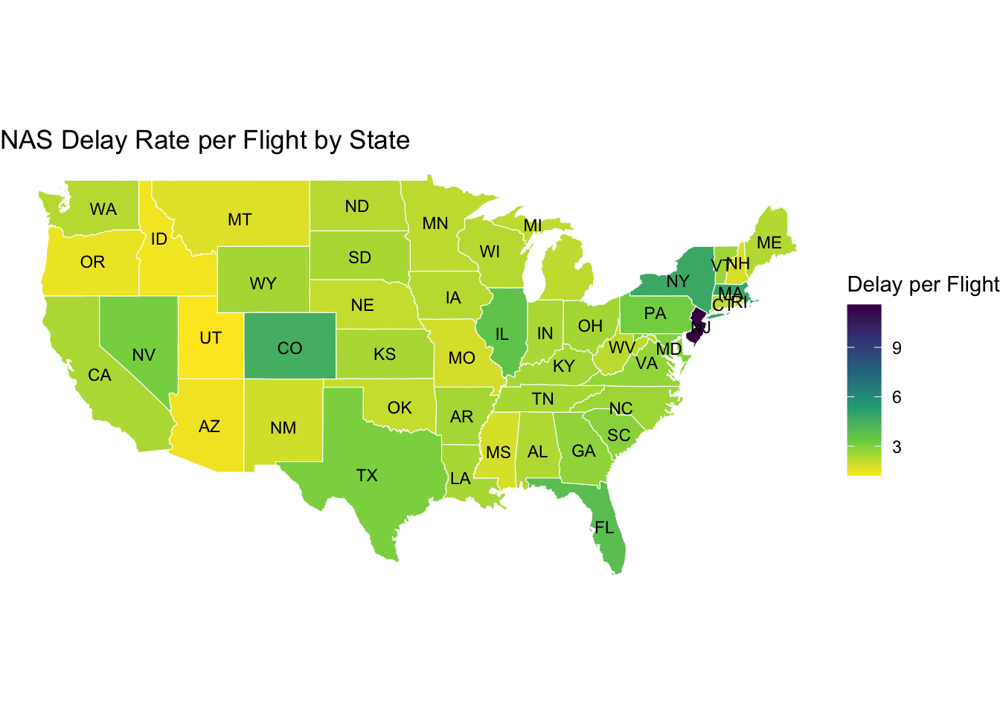
$Security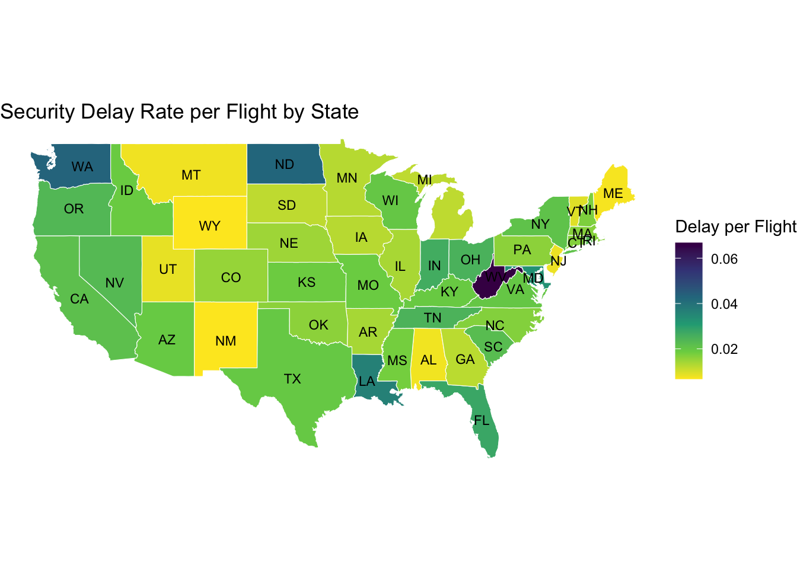
$`Late Aircraft`
Carrier
Weather
NAS delays
Security
Late aircraft delays
library(tidyverse)
library(scales)
df <- read.csv("Airline_Delay_Cause.csv")
large_hub <- c('ATL', 'ORD', 'LAX', 'DFW', 'SFO', 'DEN', 'MIA', 'EWR', 'DTW', 'JFK',
'PHX', 'LAS', 'MSP', 'STL', 'IAH', 'MCO', 'BOS', 'SEA', 'HNL', 'CLT',
'LGA', 'PHL', 'PIT', 'SLC', 'CVG', 'DCA', 'SAN', 'BWI', 'TPA', 'IAD')
medium_hub <- c('PDX', 'FLL', 'CLE', 'MCI', 'SJC', 'SJU', 'MEM', 'OAK', 'MDW', 'MSY',
'HOU', 'SNA', 'BNA', 'IND', 'SMF', 'DAL', 'SAT', 'RDU', 'CMH', 'RNO',
'ABQ', 'ONT', 'AUS', 'PBI', 'MKE', 'BDL', 'OGG', 'ANC', 'BUR', 'RSW',
'JAX', 'COS', 'PVD', 'SDF', 'GUM', 'TUS', 'OMA', 'OKC', 'TUL', 'ELP')
small_hub <- c('BUF', 'GEG', 'ORF', 'BHM', 'BOI', 'LIT', 'ROC', 'KOA', 'LIH', 'RIC',
'GSO', 'SYR', 'ALB', 'DAY', 'GRR', 'SRQ', 'DSM', 'CHS', 'ITO', 'MDT',
'GSP', 'GSN', 'TYS', 'ICT', 'SAV', 'MSN', 'PWM', 'LBB', 'PSP', 'CAE',
'PNS', 'LEX', 'MHT', 'JAN', 'GCN', 'MAF', 'HPN', 'ISP', 'FAT', 'SBN',
'MYR', 'SFB', 'HSV', 'BGR', 'STT', 'TLH', 'CRP', 'ABE', 'BTR', 'HRL',
'AMA', 'PIE', 'CID', 'BTV', 'ACY', 'SWF', 'SBA', 'MOB', 'FAI', 'SHV',
'DAB', 'JNU', 'EUG', 'LAN', 'FSD', 'TOL', 'GRB', 'FWA', 'SGF', 'ROA', 'LGB')
df$hub_classification <- case_when(
df$airport %in% large_hub ~ 'Large Hub',
df$airport %in% medium_hub ~ 'Medium Hub',
df$airport %in% small_hub ~ 'Small Hub',
TRUE ~ 'Non Hub'
)
delay_types <- c('carrier', 'weather', 'nas', 'security', 'late_aircraft')
total_flights <- sum(df$arr_flights, na.rm = TRUE)
impact_prev_df <- tibble(
delay_type = c('carrier', 'weather', 'nas', 'security', 'late_aircraft')
) |>
mutate(
total_count = map_dbl(delay_type, ~sum(df[[paste0(.x, '_ct')]], na.rm = TRUE)),
total_minutes = map_dbl(delay_type, ~sum(df[[paste0(.x, '_delay')]], na.rm = TRUE)),
delay_rate_per_100_flights = (total_count / total_flights) * 100,
avg_minutes_per_delay = if_else(total_count > 0, total_minutes / total_count, 0)
)facet_data <- impact_prev_df |>
select(delay_type,
`Total Delays (count)` = total_count,
`Total Minutes` = total_minutes,
`Delays per 100 Flights` = delay_rate_per_100_flights,
`Avg Minutes per Delay` = avg_minutes_per_delay) |>
pivot_longer(cols = -delay_type,
names_to = "metric",
values_to = "value") |>
mutate(delay_label = case_when(
delay_type == "carrier" ~ "Carrier",
delay_type == "weather" ~ "Weather",
delay_type == "nas" ~ "NAS",
delay_type == "security" ~ "Security",
delay_type == "late_aircraft" ~ "Late Aircraft"
))
delay_colors <- c(
'carrier' = '#E63946',
'weather' = '#457B9D',
'nas' = '#F77F00',
'security' = '#06A77D',
'late_aircraft' = '#9B59B6'
)
# bar chart
ggplot(facet_data, aes(x = reorder(delay_label, -value), y = value, fill = delay_type)) +
geom_col(width = 0.7) +
geom_text(aes(label = comma(round(value, 1))),
vjust = -0.3,
size = 3,
fontface = "bold") +
scale_fill_manual(values = delay_colors, guide = "none") +
scale_y_continuous(labels = comma, expand = expansion(mult = c(0, 0.2))) +
facet_wrap(~ metric, scales = "free", ncol = 2) +
labs(title = "Delay Type Performance Comparison",
x = NULL,
y = NULL) +
theme_minimal(base_size = 12) +
theme(plot.title = element_text(face = "bold", size = 16),
plot.subtitle = element_text(color = "gray40", size = 11),
strip.text = element_text(face = "bold", size = 11),
strip.background = element_rect(fill = "gray90", color = NA),
axis.text.x = element_text(angle = 45, hjust = 1, size = 10),
panel.grid.major.x = element_blank(),
panel.grid.minor = element_blank())
Late aircraft delays are the system’s largest vulnerability, representing 40% of all system delay minutes. They combine the highest frequency (7.7 per 100 flights) with the second highest average severity (~ an hour and 20 minutes). In practice, a late-arriving aircraft often becomes a late-departing aircraft, creating cascading effects throughout the system.
Weather delays are the most severe (an almost 2 hour average), yet the rarest (.9 per 100 flights), contributing to only ~ 6% of total system delay minutes. Weather delays, while severe, are not the main operation concern and often come from unavoidable external factors rather than inefficiency in the system.
Security delays are almost completely negligible representing less than .2% of total delay minutes.
Delay counts contains decimal values, likely representing when delays have multiple contributing causes.
temporal_trends <- df |>
mutate(date = as.Date(paste(year, month, "01", sep = "-"))) |>
group_by(date) |>
summarise(
total_flights = sum(arr_flights, na.rm = TRUE),
carrier_rate = (sum(carrier_ct, na.rm = TRUE) / total_flights) * 100,
weather_rate = (sum(weather_ct, na.rm = TRUE) / total_flights) * 100,
nas_rate = (sum(nas_ct, na.rm = TRUE) / total_flights) * 100,
security_rate = (sum(security_ct, na.rm = TRUE) / total_flights) * 100,
late_aircraft_rate = (sum(late_aircraft_ct, na.rm = TRUE) / total_flights) * 100,
.groups = 'drop'
) |>
arrange(date) |>
pivot_longer(
cols = ends_with("_rate"),
names_to = "delay_type",
values_to = "rate"
)
delay_colors <- c(
'carrier_rate' = '#E63946',
'weather_rate' = '#457B9D',
'nas_rate' = '#F77F00',
'security_rate' = '#06A77D',
'late_aircraft_rate' = '#9B59B6'
)
ggplot(temporal_trends, aes(x = date, y = rate, color = delay_type, group = delay_type)) +
geom_line(linewidth = 1.2) +
geom_point(size = 3) +
scale_color_manual(
values = delay_colors,
labels = c('Carrier', 'Late Aircraft', 'NAS', 'Security', 'Weather'),
name = 'Delay Type'
) +
scale_x_date(
date_breaks = "1 month",
date_labels = "%b %Y"
) +
labs(
title = "Temporal Trends in Delay Rates (July 2024 - July 2025)",
x = "Month",
y = "Delays per 100 Flights"
) +
theme_minimal(base_size = 13) +
theme(
plot.title = element_text(face = "bold", size = 15),
plot.subtitle = element_text(color = "gray40", size = 11),
legend.position = "right",
panel.grid.minor = element_blank(),
axis.text.x = element_text(angle = 45, hjust = 1)
)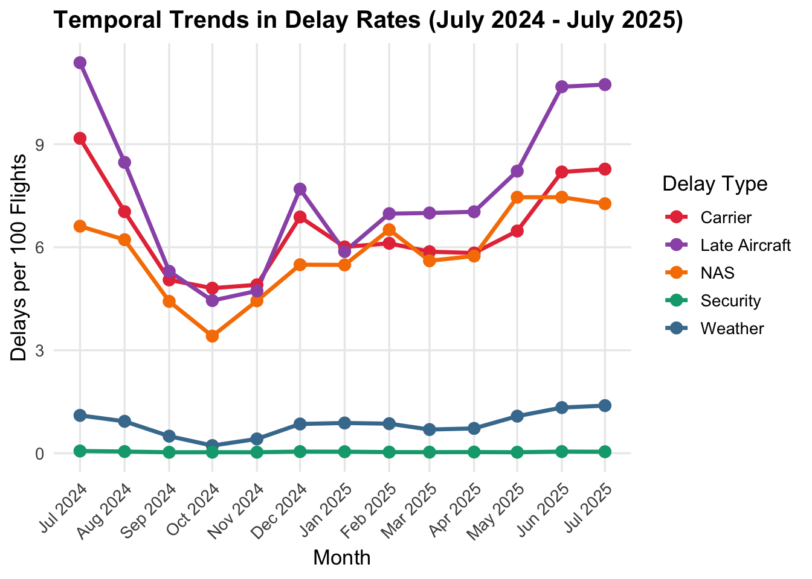
Late aircraft delays exhibits the strongest seasonal pattern, ranging from ~4.5 delays per 100 flights in October 2024 to more than double that with ~11 in July 2024. Carrier and NAS delays follow similar, but less dramatic seasonal patterns, peaking in July and reaching their lowest point in October.
According to the TSA, four of 2024’s top ten travel days occurred in July, and June 22, 2025 marked the second highest single-day volume ever with 3.097 million passengers. Those dates align with peaks in the delay spikes, suggesting that increased demand during high-volume periods drives higher NAS, carrier, and Late Aircraft delay rates. The December peak most likely represents with increased holiday travel.
Surprisingly, weather delays remain consistently low throughout the year, even with varying weather patterns per season. Security delays remain negligible.
airport_delay_rates <- df |>
group_by(airport, airport_name, hub_classification) |>
summarise(
arr_flights = sum(arr_flights, na.rm = TRUE),
carrier_rate = (sum(carrier_ct, na.rm = TRUE) / arr_flights) * 100,
weather_rate = (sum(weather_ct, na.rm = TRUE) / arr_flights) * 100,
nas_rate = (sum(nas_ct, na.rm = TRUE) / arr_flights) * 100,
late_aircraft_rate = (sum(late_aircraft_ct, na.rm = TRUE) / arr_flights) * 100,
security_rate = (sum(security_ct, na.rm = TRUE) / arr_flights) * 100,
.groups = 'drop'
) |>
filter(arr_flights >= 1000)
airport_delay_long <- airport_delay_rates |>
pivot_longer(
cols = c(carrier_rate, weather_rate, nas_rate, late_aircraft_rate),
names_to = "delay_type",
values_to = "delay_rate"
)
airport_delay_long <- airport_delay_long |>
mutate(delay_type_clean = case_when(
delay_type == "carrier_rate" ~ "Carrier",
delay_type == "weather_rate" ~ "Weather",
delay_type == "nas_rate" ~ "NAS",
delay_type == "late_aircraft_rate" ~ "Late Aircraft"
))
airport_delay_long$hub_classification <- factor(
airport_delay_long$hub_classification,
levels = c("Large Hub", "Medium Hub", "Small Hub", "Non Hub")
)
# Improved boxplot
ggplot(airport_delay_long,
aes(x = hub_classification, y = delay_rate, fill = delay_type)) +
geom_boxplot(outlier.alpha = 0.5) +
facet_wrap(~ delay_type_clean) +
scale_fill_manual(values = c(
'carrier_rate' = '#E63946',
'late_aircraft_rate' = '#9B59B6',
'nas_rate' = '#F77F00',
'weather_rate' = '#457B9D'
), guide = "none") +
labs(
title = "Delay Rates by Hub Classification",
y = "Delays per 100 Flights"
) +
theme_minimal(base_size = 12) +
theme(
plot.title = element_text(face = "bold", size = 14),
strip.text = element_text(face = "bold", size = 11),
strip.background = element_rect(fill = "gray90", color = NA),
axis.text.x = element_text(angle = 45, hjust = 1),
panel.grid.minor = element_blank()
)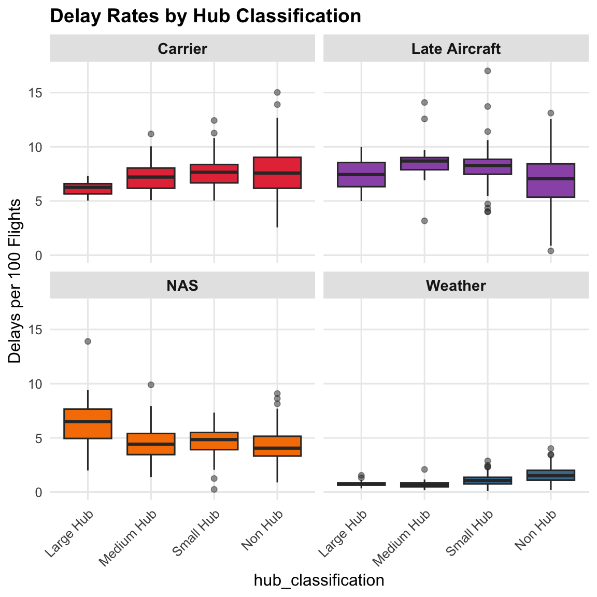
Delay rates show minimal systemic variation by hub classifications, suggesting that these delays are a system-wide issue rather than hub specific. The only exception is NAS delays, which are slightly elevated at large hubs, mostly likely due to airspace congestion.
pca_matrix <- airport_delay_rates |>
select(carrier_rate, weather_rate, nas_rate, security_rate, late_aircraft_rate) |>
as.matrix()
pca_result <- prcomp(pca_matrix, scale. = TRUE, center = TRUE)
# PC scores for airports
pca_scores <- as.data.frame(pca_result$x[, 1:2])
pca_scores$hub_classification <- airport_delay_rates$hub_classification
pca_scores$airport <- airport_delay_rates$airport
pca_scores$airport_name <- airport_delay_rates$airport_name
pca_scores$total_flights <- airport_delay_rates$arr_flights
# loadings (arrows) for delay types
pca_loadings <- as.data.frame(pca_result$rotation[, 1:2])
pca_loadings$delay_type <- rownames(pca_loadings)
# Scale loadings
pca_loadings$PC1 <- pca_loadings$PC1 * 7
pca_loadings$PC2 <- pca_loadings$PC2 * 7
pca_loadings$delay_type_clean <- case_when(
grepl("carrier", pca_loadings$delay_type) ~ "Carrier",
grepl("weather", pca_loadings$delay_type) ~ "Weather",
grepl("nas", pca_loadings$delay_type) ~ "NAS",
grepl("security", pca_loadings$delay_type) ~ "Security",
grepl("late_aircraft", pca_loadings$delay_type) ~ "Late Aircraft"
)
delay_colors <- c(
'Carrier' = '#E63946',
'Weather' = '#457B9D',
'NAS' = '#F77F00',
'Security' = '#06A77D',
'Late Aircraft' = '#9B59B6'
)
# biplot
ggplot() +
geom_hline(yintercept = 0, linetype = "solid", color = "black", linewidth = 0.3) +
geom_vline(xintercept = 0, linetype = "solid", color = "black", linewidth = 0.3) +
geom_point(data = pca_scores,
aes(x = PC1, y = PC2, shape = ifelse(hub_classification == "Non Hub", 'Non Hub', 'Hub')),
size = 2.5, alpha = 0.7) +
scale_shape_manual(values = c('Non Hub' = 16, 'Hub' = 4), name = 'Airport Type') +
geom_segment(data = pca_loadings,
aes(x = 0, y = 0, xend = PC1, yend = PC2, color = delay_type_clean),
arrow = arrow(length = unit(0.3, "cm")),
linewidth = 1.2) +
scale_color_manual(values = delay_colors, name = 'Delay Type') +
labs(title = "PCA Biplot: Airport Delay Profiles",
x = bquote(underline("PC1") ~ "(" * .(round(summary(pca_result)$importance[2,1] * 100, 1)) * "%)"),
y = bquote(underline("PC2") ~ "(" * .(round(summary(pca_result)$importance[2,2] * 100, 1)) * "%)")) +
theme_minimal(base_size = 12) +
theme(plot.title = element_text(face = "bold", size = 14, hjust = 0.5),
axis.line = element_blank(),
panel.grid.major = element_line(color = "gray90", linetype = "dashed"),
panel.grid.minor = element_blank(),
axis.title = element_text(face = "bold"))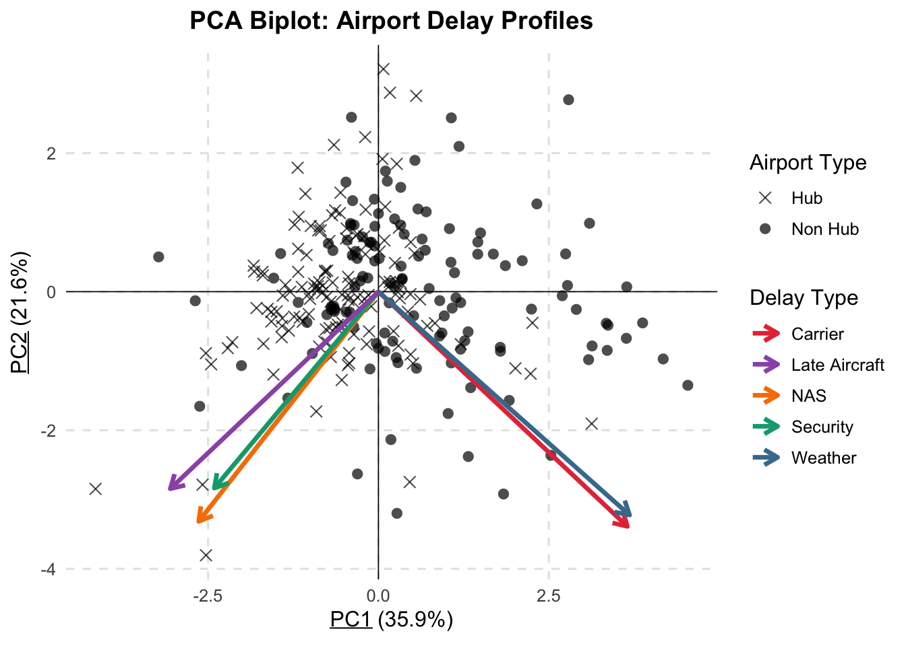
The PCA reveals two distinct delay profiles. NAS, late aircraft, and security delays are strongly correlated and tend to occur together. NAS, late aircraft, and security delays relate towa systemic congestion and bottlenecks where higher flight volume can lend itself to flight delays and higher passenger volume to security delays. This makes sense as the larger hub airports are concentrated on the negative PC1 side. Non-hub airports are more dispersed throughout the plot.
Weather and carrier delays also tend to occur together, possibly representing airports where external conditions and airline-specific issues are the bigger problems. The similar arrow magnitudes across delay types indicate that multiple factors contribute to differentiating delay patterns, though carrier and weather delays align most strongly with PC1.
Because late aircraft delays are the highest concern and not neccesarily a problem separated by hub type, we created a dot plot of the top 50 airports with the highest late aircraft delay rates. Security delays are not included because they are so few.
top50_airports <- airport_delay_rates |>
slice_max(order_by = late_aircraft_rate, n = 50)
# long format
top50_airports_long <- top50_airports |>
select(airport, carrier_rate, weather_rate, nas_rate, late_aircraft_rate) |>
pivot_longer(cols = c(carrier_rate, weather_rate, nas_rate, late_aircraft_rate),
names_to = 'delay_type',
values_to = 'rate')
ggplot(top50_airports_long,
aes(x = rate,
y = fct_reorder2(airport, delay_type == 'late_aircraft_rate', rate, .desc = FALSE),
color = delay_type)) +
geom_point(size = 3, alpha = .9) +
scale_color_manual(values = c(
'carrier_rate' = '#E63946',
'late_aircraft_rate' = '#9B59B6',
'nas_rate' = '#F77F00',
'weather_rate' = '#457B9D'
),
labels = c('Carrier', 'Late Aircraft', 'NAS', 'Weather'),
name = 'Delay Type') +
labs(title = "Top 50 Airports by Late Aircraft Delay Rate",
x = "Delays per 100 Flights",
y = "") +
theme_linedraw() +
theme(plot.title = element_text(face = "bold", size = 14),
legend.position = "bottom")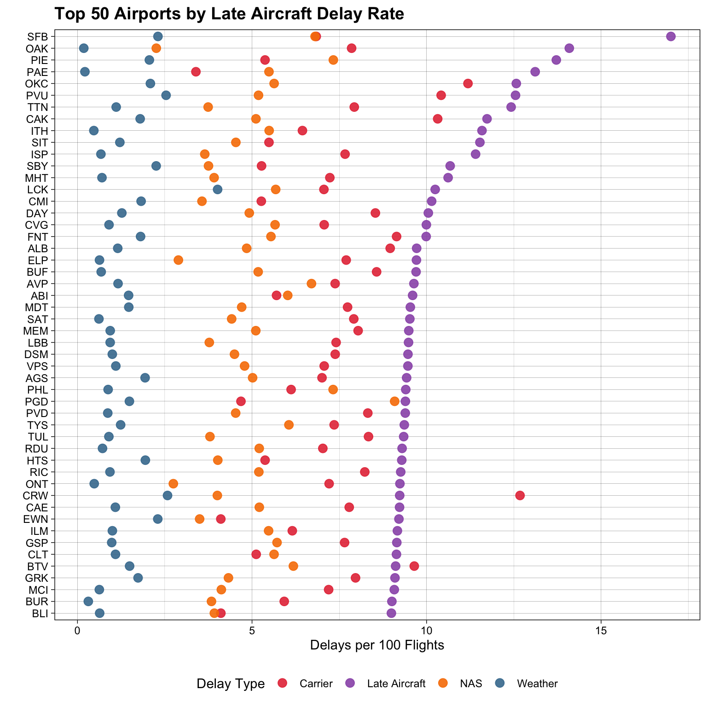
Carrier, NAS, and weather delay rates do not increase with Late Aircraft delay rates. This suggests that late aircraft delays are driven by airport-specific factors such as scheduling practices and turnaround time rather than just accumulating from other delay types.
There are two clear outliers, SFB (Orlando Sanford), with the highest delay rate of 17 late aircraft delays per 100 flights, and CAE (Columbia Metropolitan) which has a higher carrier rate (12.7/100 flights) than late aircraft rate (9.2/100).
outlier_rows <- airport_delay_rates[airport_delay_rates$airport == 'SFB' | airport_delay_rates$airport == 'CRW',]
as.data.frame(outlier_rows) airport airport_name
1 CRW Charleston/Dunbar, WV: West Virginia International Yeager
2 SFB Sanford, FL: Orlando Sanford International
hub_classification arr_flights carrier_rate weather_rate nas_rate
1 Non Hub 3964 12.677598 2.579465 4.006559
2 Small Hub 11153 6.839505 2.305120 6.805792
late_aircraft_rate security_rate
1 9.230323 0.08779011
2 17.000090 0.11691921